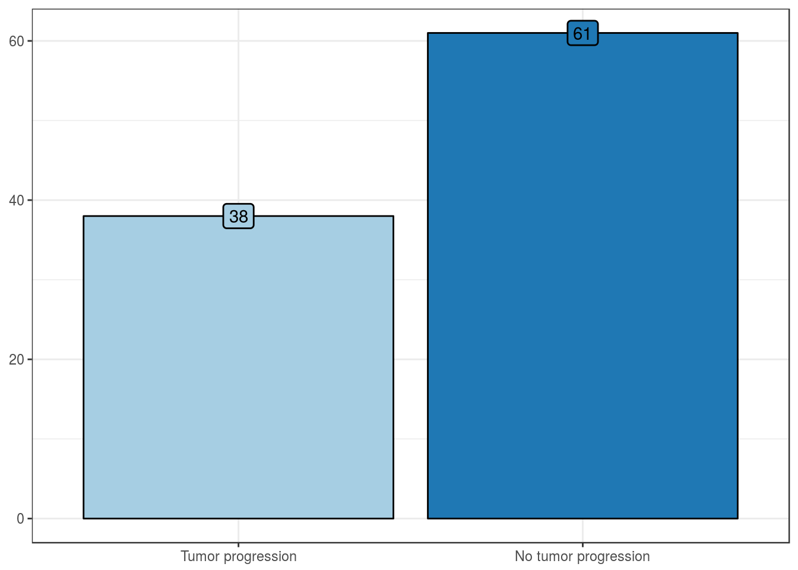

Cohort features
Clinical features
Patient’s age, in years
| Values | |
|---|---|
| Mean | 70 |
| Standard deviation | 8.9 |
| Median | 71 |
| Interquartile range | 11.5 |
| Mininum | 48 |
| Maximum | 87 |
Patient’s sex
| No. Cases (%) | |
|---|---|
| Female | 39 (39) |
| Male | 60 (61) |
Pathologic features
Tumor location
| No. Cases (%) | |
|---|---|
| Pelvis | 45 (45) |
| Pelvis-Ureter | 4 (4) |
| Ureter | 50 (51) |
pT stage
| No. Cases (%) | |
|---|---|
| pTa | 19 (19) |
| pT1 | 18 (18) |
| pT2 | 8 (8) |
| pT3 | 48 (48) |
| pT4 | 6 (6) |
Histologic grade
| No. Cases (%) | |
|---|---|
| Grade 1 | 7 (7) |
| Grade 2 | 39 (39) |
| Grade 3 | 53 (54) |

WHO histologic grade
| No. Cases (%) | |
|---|---|
| Low Grade | 15 (15) |
| High Grade | 84 (85) |
Lymphovascular invasion
| No. Cases (%) | |
|---|---|
| Lymphovascular invasion | 40 (40) |
| No lymphovascular invasion | 59 (60) |
Lymph node metastasis
| No. Cases (%) | |
|---|---|
| Lymph node metastasis | 12 (12) |
| No lymph node metastasis | 84 (88) |
Outcome features
Distant metastasis
| No. Cases (%) | |
|---|---|
| Distant metastasis | 4 (4) |
| No distant metastasis | 90 (96) |
Bladder recurrence
| No. Cases (%) | |
|---|---|
| Bladder recurrence | 32 (33) |
| No bladder recurrence | 65 (67) |
Follow-up until bladder recurrence, in months
| Values | |
|---|---|
| Mean | 42.8 |
| Standard deviation | 39.2 |
| Median | 31 |
| Interquartile range | 49.5 |
| Mininum | 2 |
| Maximum | 173 |
Tumor progression
| No. Cases (%) | |
|---|---|
| Tumor progression | 38 (38) |
| No tumor progression | 61 (62) |

Follow-up until tumor progression, in months
| Values | |
|---|---|
| Mean | 46.4 |
| Standard deviation | 43.1 |
| Median | 37 |
| Interquartile range | 71 |
| Mininum | 0 |
| Maximum | 173 |
Final outcome
Possible outcomes:
- NED: No evidence of disease
- AWD: Alive with disease
- DOC: Died from unrelated causes (i.e., non-cancer)
- DOD: Died from disease (i.e., cancer)
- LFU: Lost at follow-up
| No. Cases (%) | |
|---|---|
| NED | 38 (38) |
| AWD | 5 (5) |
| DOC | 3 (3) |
| DOD | 30 (30) |
| LFU | 23 (23) |
Follow-up until final outcome, in months
| Values | |
|---|---|
| Mean | 54.8 |
| Standard deviation | 39.9 |
| Median | 47 |
| Interquartile range | 56.5 |
| Mininum | 3 |
| Maximum | 173 |
Overall mortality
| No. Cases (%) | |
|---|---|
| DOC + DOD | 33 (33) |
| NED + AWD + LFU | 66 (67) |